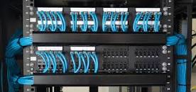

Cabeamento e sua estrutura
Sua estrutura se deve por meio de cabeamentos horizontais,assim como verticais,que conectavam
Os equipamentos:eletricos,segurança,computadores,telefonia e rede de dados

Tipos de cabeamentos e equipamentos
Possuindo cabeamento tanto horizontal que conecta telecomunicaçoes e a area de trabalho
E cabeamento vertical que realiza a transmissao por meio de cabos e fios:opticos monomodo
e multimodo,como cabo de par trançado
Eles devem ser maleaveis e passiveis a trocas de lugares,dependendo de aonde esteja a area de trabalho(local aonde estao os equipamentos que levarao esses cabos)
Do tipo:computadore,telefones,jumper,cabos,adaptadores de rede(placa de rede,wifi)
E finalmente chegando nos equipamentos que utilizaram dessa estrutura:
- Switch
Um switch de rede permite que dois ou mais dispositivos de TI se comuniquem entre si. Além de se conectarem a dispositivos finais como PCs e impressoras
- Roteadores
Serve para estabelecer conexões entre varios computadores,podendo realizar compartilhamento de internet e utilizar o popular wifi
- PABX
Viabiliza uma rede de telefonia interna,podendo ser analogica(necessita de cabeamento) e virtual(via aplicativo)
- Patch Panel
È utilizado para identificar aonde esta o cabo,assim os fios nao precisam ficar bagunçados,nem atras de paredes ou jogados

- Servidores
Servidor pode ser tanto um computador como software que serve como central formando uma arquitetura "cliente-servidor",com outros dispositivos como celulares,tablets

- Destribuidor optico
È responsavel pela organizaçao e flexibilidade do cabeamento da fibra optica,assim como proteger as fusoes entre as extensões e cabos ele normalmente e usado em projetos mais robusto.
Consideraçoes finais e beneficios
Esse tipo de estrutura,facilita a facil gestao,tendo acesso visual do cabeamento,um servidor funcional,assim como todos os switchs,facilidade assim como a manutençao ou falta de algum.